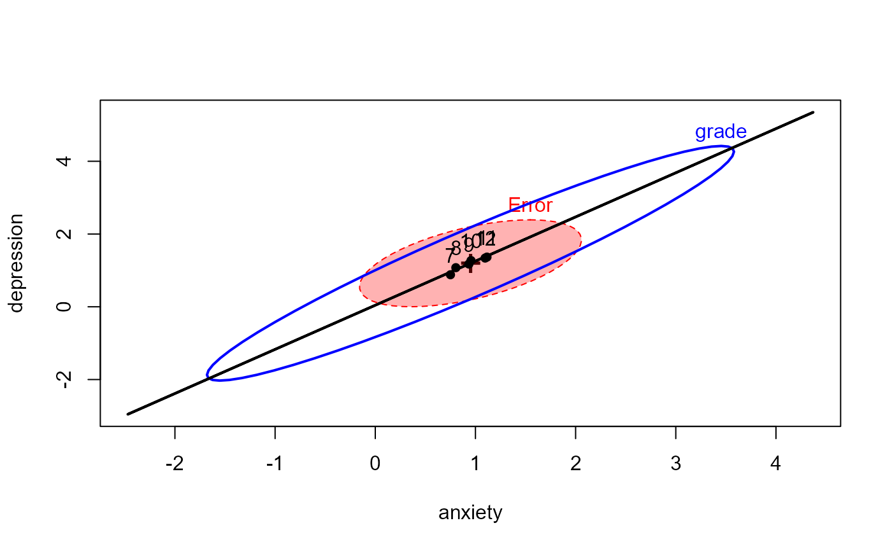

<!-- Generated by pkgdown: do not edit by hand -->
<!DOCTYPE html>
<html>
  <head>
  <meta charset="utf-8">
<meta http-equiv="X-UA-Compatible" content="IE=edge">
<meta name="viewport" content="width=device-width, initial-scale=1.0">

<title>Adolescent Health Data — AddHealth • heplots</title>

<!-- jquery -->
<script src="https://code.jquery.com/jquery-3.1.0.min.js" integrity="sha384-nrOSfDHtoPMzJHjVTdCopGqIqeYETSXhZDFyniQ8ZHcVy08QesyHcnOUpMpqnmWq" crossorigin="anonymous"></script>
<!-- Bootstrap -->
<link href="https://maxcdn.bootstrapcdn.com/bootswatch/3.3.7/cerulean/bootstrap.min.css" rel="stylesheet" crossorigin="anonymous">

<script src="https://maxcdn.bootstrapcdn.com/bootstrap/3.3.7/js/bootstrap.min.js" integrity="sha384-Tc5IQib027qvyjSMfHjOMaLkfuWVxZxUPnCJA7l2mCWNIpG9mGCD8wGNIcPD7Txa" crossorigin="anonymous"></script>

<!-- Font Awesome icons -->
<link href="https://maxcdn.bootstrapcdn.com/font-awesome/4.6.3/css/font-awesome.min.css" rel="stylesheet" integrity="sha384-T8Gy5hrqNKT+hzMclPo118YTQO6cYprQmhrYwIiQ/3axmI1hQomh7Ud2hPOy8SP1" crossorigin="anonymous">


<!-- pkgdown -->
<link href="../pkgdown.css" rel="stylesheet">
<script src="../jquery.sticky-kit.min.js"></script>
<script src="../pkgdown.js"></script>
  
  
<!-- mathjax -->
<script src='https://mathjax.rstudio.com/latest/MathJax.js?config=TeX-AMS-MML_HTMLorMML'></script>

<!--[if lt IE 9]>
<script src="https://oss.maxcdn.com/html5shiv/3.7.3/html5shiv.min.js"></script>
<script src="https://oss.maxcdn.com/respond/1.4.2/respond.min.js"></script>
<![endif]-->


  </head>

  <body>
    <div class="container template-reference-topic">
      <header>
      <div class="navbar navbar-default navbar-fixed-top" role="navigation">
  <div class="container">
    <div class="navbar-header">
      <button type="button" class="navbar-toggle collapsed" data-toggle="collapse" data-target="#navbar">
        <span class="icon-bar"></span>
        <span class="icon-bar"></span>
        <span class="icon-bar"></span>
      </button>
      <a class="navbar-brand" href="../index.html">heplots</a>
    </div>
    <div id="navbar" class="navbar-collapse collapse">
      <ul class="nav navbar-nav">
        <li>
  <a href="../index.html">
    <span class="fa fa-home fa-lg"></span>
     
  </a>
</li>
<li>
  <a href="../reference/index.html">Reference</a>
</li>
      </ul>
      
      <ul class="nav navbar-nav navbar-right">
        
      </ul>
    </div><!--/.nav-collapse -->
  </div><!--/.container -->
</div><!--/.navbar -->

      
      </header>

      <div class="row">
  <div class="col-md-9 contents">
    <div class="page-header">
    <h1>Adolescent Health Data</h1>
    </div>

    
    <p>This data was taken from the National Longitudinal Study
of Adolescent Health.  It is a cross-sectional sample
of participants from grades 7--12,
described and analyzed by Warne (2014).</p>
    

    <pre class="usage"><span class='fu'>data</span>(<span class='st'>"AddHealth"</span>)</pre>
        
    <h2 class="hasAnchor" id="format"><a class="anchor" href="#format"></a>Format</h2>

    <p>A data frame with 4344 observations on the following 3 variables.</p><dl class='dl-horizontal'>
    <dt><code>grade</code></dt><dd><p>an ordered factor with levels <code>7</code> &lt; <code>8</code> &lt; <code>9</code> &lt; <code>10</code> &lt; <code>11</code> &lt; <code>12</code></p></dd>
    <dt><code>depression</code></dt><dd><p>a numeric vector</p></dd>
    <dt><code>anxiety</code></dt><dd><p>a numeric vector</p></dd>
  </dl>
    
    <h2 class="hasAnchor" id="details"><a class="anchor" href="#details"></a>Details</h2>

    <p><code>depression</code> is the response to the question
"In the last month, how often did you feel depressed or blue?"
    <code>anxiety</code> is the response to the question
"In the last month, how often did you have trouble relaxing?"</p>
<p>The responses for <code>depression</code> and <code>anxiety</code> were recorded on a
5-point Likert scale, with
categories 
<code>0="Never", 1="Rarely", 2="Occasionally", 3="Often", 4="Every day"</code></p>
    
    <h2 class="hasAnchor" id="source"><a class="anchor" href="#source"></a>Source</h2>

    <p>Warne, R. T. (2014). A primer on Multivariate Analysis of Variance (MANOVA)
for Behavioral Scientists.  <em>Practical Assessment, Research &amp; Evaluation</em>,
19 (1).
<a href='http://pareonline.net/getvn.asp?v=19&amp;n=17'>http://pareonline.net/getvn.asp?v=19&amp;n=17</a></p>
    

    <h2 class="hasAnchor" id="examples"><a class="anchor" href="#examples"></a>Examples</h2>
    <pre class="examples"><div class='input'><span class='fu'>data</span>(<span class='no'>AddHealth</span>)
<span class='co'># fit mlm</span>
<span class='no'>AH.mod</span> <span class='kw'>&lt;-</span> <span class='fu'>lm</span>(<span class='fu'>cbind</span>(<span class='no'>depression</span>, <span class='no'>anxiety</span>) ~ <span class='no'>grade</span>, <span class='kw'>data</span><span class='kw'>=</span><span class='no'>AddHealth</span>)

<span class='fu'>Anova</span>(<span class='no'>AH.mod</span>)</div><div class='output co'>#&gt; 
#&gt; Type II MANOVA Tests: Pillai test statistic
#&gt;       Df test stat approx F num Df den Df    Pr(&gt;F)    
#&gt; grade  5  0.022415    9.834     10   8676 &lt; 2.2e-16 ***
#&gt; ---
#&gt; Signif. codes:  0 <U+0091>***<U+0092> 0.001 <U+0091>**<U+0092> 0.01 <U+0091>*<U+0092> 0.05 <U+0091>.<U+0092> 0.1 <U+0091> <U+0092> 1</div><div class='input'><span class='fu'>summary</span>(<span class='fu'>Anova</span>(<span class='no'>AH.mod</span>))</div><div class='output co'>#&gt; 
#&gt; Type II MANOVA Tests:
#&gt; 
#&gt; Sum of squares and products for error:
#&gt;            depression  anxiety
#&gt; depression   6058.911 3021.691
#&gt; anxiety      3021.691 5210.233
#&gt; 
#&gt; ------------------------------------------
#&gt;  
#&gt; Term: grade 
#&gt; 
#&gt; Sum of squares and products for the hypothesis:
#&gt;            depression  anxiety
#&gt; depression  112.76722 87.57399
#&gt; anxiety      87.57399 75.02650
#&gt; 
#&gt; Multivariate Tests: grade
#&gt;                  Df test stat  approx F num Df den Df     Pr(&gt;F)    
#&gt; Pillai            5 0.0224153  9.833964     10   8676 &lt; 2.22e-16 ***
#&gt; Wilks             5 0.9776192  9.872584     10   8674 &lt; 2.22e-16 ***
#&gt; Hotelling-Lawley  5 0.0228579  9.911186     10   8672 &lt; 2.22e-16 ***
#&gt; Roy               5 0.0211939 18.387786      5   4338 &lt; 2.22e-16 ***
#&gt; ---
#&gt; Signif. codes:  0 <U+0091>***<U+0092> 0.001 <U+0091>**<U+0092> 0.01 <U+0091>*<U+0092> 0.05 <U+0091>.<U+0092> 0.1 <U+0091> <U+0092> 1</div><div class='input'>
<span class='fu'><a href='heplot.html'>heplot</a></span>(<span class='no'>AH.mod</span>, <span class='kw'>hypotheses</span><span class='kw'>=</span><span class='st'>"grade.L"</span>, <span class='kw'>fill</span><span class='kw'>=</span><span class='fu'>c</span>(<span class='fl'>TRUE</span>, <span class='fl'>FALSE</span>))</div><div class='img'></div></pre>
  </div>
  <div class="col-md-3 hidden-xs hidden-sm" id="sidebar">
    <h2>Contents</h2>
    <ul class="nav nav-pills nav-stacked">
      
      <li><a href="#format">Format</a></li>

      <li><a href="#details">Details</a></li>

      <li><a href="#source">Source</a></li>
      
      <li><a href="#examples">Examples</a></li>
    </ul>

  </div>
</div>

      <footer>
      <div class="copyright">
  <p>Developed by John Fox, Michael Friendly.</p>
</div>

<div class="pkgdown">
  <p>Site built with <a href="http://hadley.github.io/pkgdown/">pkgdown</a>.</p>
</div>

      </footer>
   </div>

  </body>
</html>
